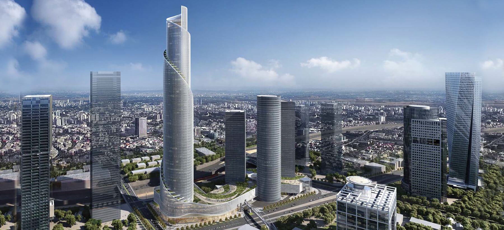

← חזרה
17/9/2025 - אדריכלות וסיפוק
אתמול נפגשתי עם הברוכינים בתל אביב. בדרכי למקום המפגש התענגתי (למרות שאני מתעב את העיר) על מראה הבניינים בסביבה, אני מדבר על הבנייה החדשה ולא בניינים ישנים, אבל מדבר על מגדלים וגם על בניינים נמוכים.
ליד מגדלי עזריאלי בתל אביב בונים עכשיו בניין חדש שנראה מטורף - מגדל הספירלה.

אני מצליח להבין שאיזה אדריכל למד את החומר הנדרש שעובר בירושה מדור לדור (כל דור כמובן משפר את השיטה) ותיכנן את המגדל. אבל לא מצליח לעכל את זה שאיזה קבלן וחבורת פועלים הולכים לממש את התוכנית הזו ולבנות את המבנה העצום. ברור שמדובר בעבודה של אלפי אנשים ומיליארדי שקלים. סכומים ומספרים שאני לא יכול לעכל, מזכיר לי שפעם בבית ספר לקחו אותנו להצגה שבתחילה שלה המורה מנסה להראות לתלמידים שלו איך 7 מיליון אטבי ניירות נראים, בשביל שיקבלו איזשהי הכרה או דמיון לכמה זה 7 מיליון יהודים שנהרגו בשואה.
נחזור למבנה - משום מה קל לי לקבל את העבודה שבית תוכנה שכולל מאות עובדים מצליחים לבנות תוכנה מורכבת ביותר, או שמפעל מייצר רכב או מטוס. הבניין פשוט עצום ואנחנו, כלכך קטנים, מצליחים להעמיד אותו על האדמה בלי שיתנדנד ויפול.
נחמד לראות ולהנות מהתוצאה הסופית אבל אני לא מוכן לחיות באזור, בתופת, בזמן שבונים. מאז שאני זוכר את עצמי יש רעש באיזור הבית שלי בגבעתיים (לא אמור להיות עיר שקטה משהו?). בניינים, צמחייה, תשתית מים, חשמל בטח גם כן. גם אנחנו אחראיים עשינו שיפוץ פנימי וחיצוני. עבורי, זה פשוט עינוי לחיות ככה ואני לא מאחל לאף אחד לחיות בסביבה כזו - אני לא מדבר רק על הרעש, הרעש הזה הוא תוצאה של תרבות שאין לה די.
יש איזה סיפור על אדם פשוט שנמצא באותו חדר עם אחד האנשים העשירים בעולם (דמיינו מי שאתם רוצים). חברו של הפשוט אומר לו שלעשיר יש הכל. פשוט אומר לחברו - יש לי דבר אחד שאין לו, לי יש מספיק.